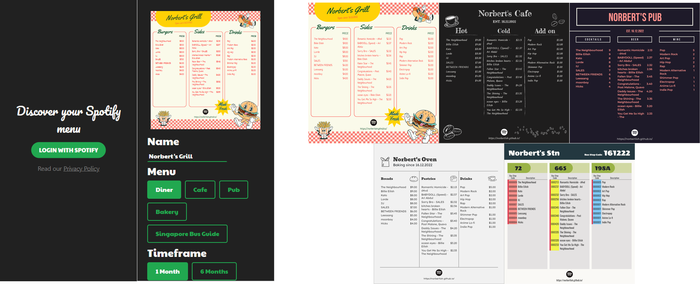
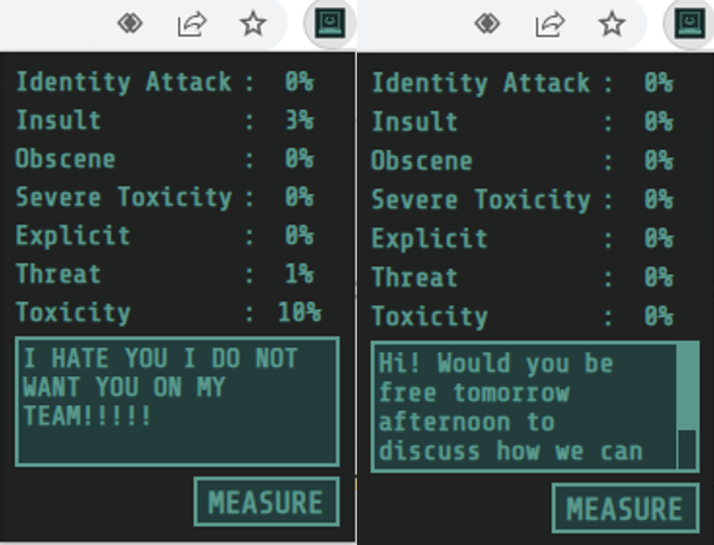
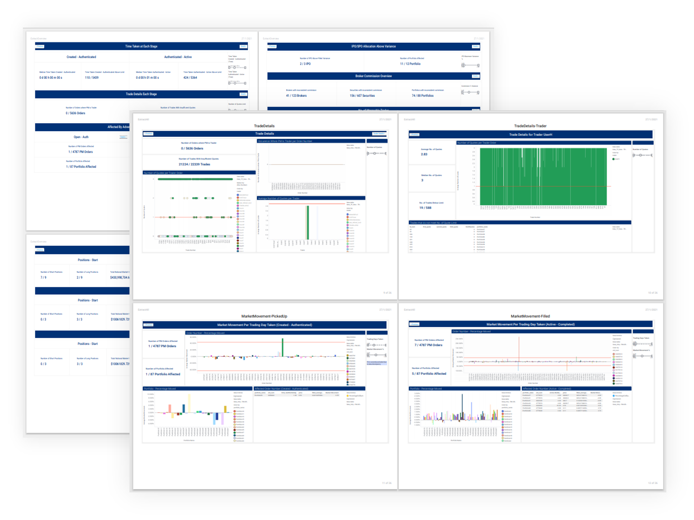

PROJECTS & EXPERIENCES
SPOTIFY MENU

Being an Audiophile and a food lover, I decided to make something that incorporates both of them. I built a web application that allows users to generate beautiful restaurant menus and other posters based on their Spotify preferences and activities. Currently, the web application has over 300 users and 500 visits.
EXCEL AUTOMATION

While serving my National Service, I realised that many repetitive and manual tasks can be automated. As a programmer, I saw this as an opportunity to practise my programming skills and make my daily tasks easier. Being on an Intranet, Excel VBA was as close as I could get to doing any sort of programming without additional installations. During my first month at my unit, I digitalized multiple physical logbooks. This allowed users to autofill their details and sign digitally. I have also written 3 other scripts that prepare data for audit, prepare data and create dashboards from data generated from SQL and help tech support users to manage their tickets and send emails automatically. This is currently being used internally by MINDEF, Accenture, NCS and Maventree employees daily. Due to the nature of the workplace, the files are all restricted for external use.
NEGATIVITY CHECKER CHROME EXTENSION

During my National Service, I was determined to make the most use of my two years. I decided to take Harvard’s CS50 course. With 2022 being a hard time for the entire world, we needed to treat each other better to prevent any more negativity. For the final project for CS50, I decided to build a chrome extension that uses Tensorflow Models to predict the toxicity and negativity in the text that users type. This can encourage users to rephrase their negative sentences and prevent any unintentional toxicity.
TIBCO & SCHRODERS DASHBOARD

During my Final Year at Temasek Polytechnic, for my Major Project, I worked with TIBCO and Schroders to create a dashboard with TIBCO’s software for Schroders to detect anomalies in their trades and report any potentially suspicious activities. TIBCO’s software allows users to write their own custom data preparation and visualisation functions using PYTHON, R, JS and HTML. This dashboard reduced the time required for the workflow from about 14 days to about 2 days. This project was awarded “TIBCO Software Singapore Project Prize” for the Top 3 Outstanding Major Project Students and it was showcased to the public and media along with 4 other top projects for Temasek Polytechnic’s Infotech day. Due to the nature of the data, the files are all restricted for external use.
GIC INTERNSHIP